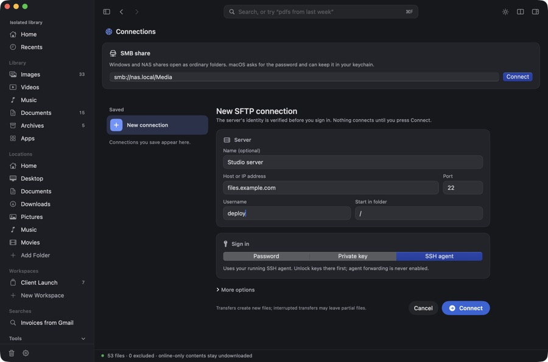

SFTP client and SMB file manager for Mac
Updated
smb://nas.local/Media. macOS mounts the share, and MacEx browses it like any other folder. MacEx is not a sync tool: it doesn’t copy whole folders over SFTP, delete files on a server, or open a terminal.
Connect to a server over SFTP
- Press ⌘K, or click Connections in the sidebar.
- Enter the host, port and username. You can also give the connection a name and a folder to start in.
- Choose how to sign in: Password, Private key (RSA or Ed25519, including encrypted keys) or SSH agent.
- Click Connect. The first time, MacEx shows the server’s host-key fingerprint. Check it against the one your host gives you, then confirm.
Saved connections appear on the Connections page. MacEx stores a password or key passphrase in your Keychain only if you choose to, and never in its own files.
What you can do on the server
- Browse folders and see file sizes and dates.
- Upload files from your Mac and download files to it, with progress and a Cancel button.
- Rename files and make new folders.
- Open or preview a file. MacEx downloads it first, with a size limit, and then shows it.
Why the host-key check matters
A host key proves you are talking to your server and not to someone in between. MacEx asks you to confirm an unknown key before it sends your password or key. If a saved server’s key later changes, MacEx blocks sign-in until you review the new key. You can’t turn this check off. Agent forwarding is never enabled.
Safe transfers
Uploads and downloads always create new files and never replace one that already exists. If a transfer is cancelled or the connection drops, the partly written file can be left behind, and the status line says so.
Open SMB shares from a NAS or Windows PC
On the Connections page, type an address in the SMB share field: smb://server/share, server/share or a Windows-style \\server\share. Click Connect. macOS shows its own sign-in window and can save the password in your keychain, so MacEx never sees it. The share mounts under /Volumes and opens in MacEx.
Once it is open, a share is an ordinary folder. Split View, copy and move with F5 and F6, batch rename, zip and tags all work on it. Recent addresses are remembered for next time.
When to use it
- Web developers: upload a build folder’s files to a staging server, or download a log, without a separate FTP app.
- Home and studio NAS: open the media share in one pane and your Downloads in the other, then press F6 to move files across.
- Office file shares: rename a batch of scans on a Windows share with a live preview.
Limits
- SFTP transfers are file by file. MacEx doesn’t upload or download whole folders at once.
- No deleting on the server, no remote Trash, no folder sync and no editing a remote file in place.
- No terminal, no jump hosts and no automatic reconnect.
- Only SFTP and SMB. FTP, WebDAV, S3 and cloud drives are not supported, although cloud folders already synced to your Mac work as local folders.
- MacEx has not had an independent security audit. The SSH libraries it bundles, libssh2 and OpenSSL, are pinned versions.
Related
MacEx runs on macOS 14 or later, Apple silicon and Intel. One-time purchase, no account, no subscription.